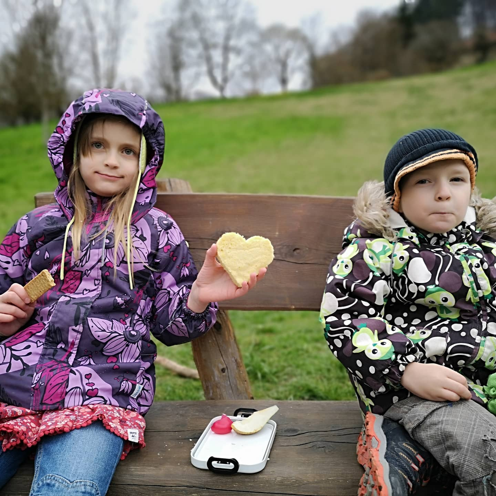

Corona Walk. In the meantime someone on Twitter wanted to convince me that taking walks in the...
Imported from Instagram.
Corona Walk. In the meantime someone on Twitter wanted to convince me that taking walks in the nature was also silly, that means no walks. I disagree. Leave the house without touching doors, use the car, don't get parking tickets from machines, keep to yourself. But psych hygiene really is especially important right now. I even washed the park bench with hand sanitizer...
#3 #staythefuckhome
